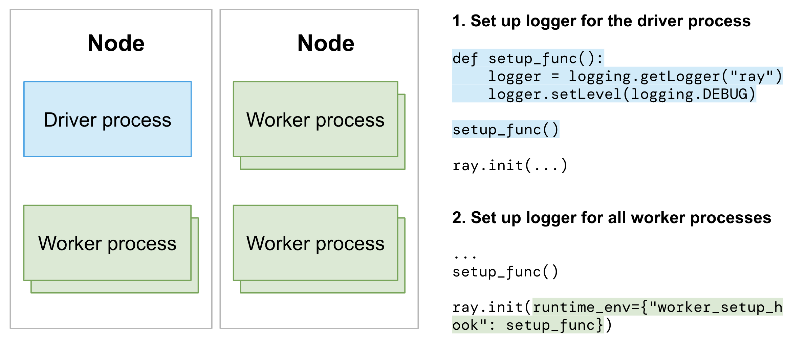

Configuring Logging
Contents
Configuring Logging#
This guide helps you understand and modify the configuration of Ray’s logging system.
Logging directory#
By default, Ray log files are stored in a /tmp/ray/session_*/logs directory. View the log files in logging directory below to understand how they are organized within the logs folder.
Note
Ray uses /tmp/ray (for Linux and macOS) as the default temp directory. To change the temp and the logging directory, specify it when you call ray start or ray.init().
A new Ray session creates a new folder to the temp directory. The latest session folder is symlinked to /tmp/ray/session_latest. Here is an example temp directory:
├── tmp/ray
│ ├── session_latest
│ │ ├── logs
│ │ ├── ...
│ ├── session_2023-05-14_21-19-58_128000_45083
│ │ ├── logs
│ │ ├── ...
│ ├── session_2023-05-15_21-54-19_361265_24281
│ ├── ...
Usually, temp directories are cleared up whenever the machines reboot. As a result, log files may get lost whenever your cluster or some of the nodes are stopped or terminated.
If you need to inspect logs after the clusters are stopped or terminated, you need to store and persist the logs. View the instructions for how to process and export logs for clusters on VMs and KubeRay Clusters.
Log files in logging directory#
Below are the log files in the logging directory. Broadly speaking, two types of log files exist: system log files and application log files.
Note that .out logs are from stdout/stderr and .err logs are from stderr. The backward compatibility of log directories is not guaranteed.
Note
System logs may include information about your applications. For example, runtime_env_setup-[job_id].log may include information about your application’s environment and dependency.
Application logs#
job-driver-[submission_id].log: The stdout of a job submitted with the :ref:Ray Jobs API <jobs-overview>.worker-[worker_id]-[job_id]-[pid].[out|err]: Python or Java part of Ray drivers and workers. All stdout and stderr from Tasks or Actors are streamed to these files. Note that job_id is the ID of the driver.
System (component) logs#
dashboard.[log|err]: A log file of a Ray Dashboard..logfiles contain logs generated from the dashboard’s logger..errfiles contain stdout and stderr printed from the dashboard. They are usually empty except when the dashboard crashes unexpectedly.dashboard_agent.log: Every Ray node has one dashboard agent. This is a log file of the agent.gcs_server.[out|err]: The GCS server is a stateless server that manages Ray cluster metadata. It exists only in the head node.io-worker-[worker_id]-[pid].[out|err]: Ray creates IO workers to spill/restore objects to external storage by default from Ray 1.3+. This is a log file of IO workers.log_monitor.[log|err]: The log monitor is in charge of streaming logs to the driver..logfiles contain logs generated from the log monitor’s logger..errfiles contain the stdout and stderr printed from the log monitor. They are usually empty except when the log monitor crashes unexpectedly.monitor.[out|err]: Stdout and stderr of a cluster launcher.monitor.log: Ray’s Cluster Launcher operates from a monitor process. It also manages the Autoscaler.plasma_store.[out|err]: Deprecated.python-core-driver-[worker_id]_[pid].log: Ray drivers consist of CPP core and a Python or Java frontend. CPP code generates this log file.python-core-worker-[worker_id]_[pid].log: Ray workers consist of CPP core and a Python or Java frontend. CPP code generates this log file.raylet.[out|err]: A log file of raylets.redis-shard_[shard_index].[out|err]: Redis shard log files.redis.[out|err]: Redis log files.runtime_env_agent.log: Every Ray node has one agent that manages :ref:Runtime Environment <runtime-environments>creation, deletion, and caching. This is the log file of the agent containing logs of create or delete requests and cache hits and misses. For the logs of the actual installations (for example,pip installlogs), see theruntime_env_setup-[job_id].logfile (see below).runtime_env_setup-ray_client_server_[port].log: Logs from installing Runtime Environments for a job when connecting with Ray Client.runtime_env_setup-[job_id].log: Logs from installing Runtime Environments for a Task, Actor or Job. This file is only present if a Runtime Environment is installed.
Redirecting Worker logs to the Driver#
By default, Worker stdout and stderr for Tasks and Actors stream to the Ray Driver (the entrypoint script that calls ray.init). It helps users aggregate the logs for the distributed Ray application in a single place.
import ray
# Initiate a driver.
ray.init()
@ray.remote
def task():
print("task")
ray.get(task.remote())
@ray.remote
class Actor:
def ready(self):
print("actor")
actor = Actor.remote()
ray.get(actor.ready.remote())
All stdout emitted from the print method are printed to the driver with a (Task or Actor repr, process ID, IP address) prefix.
(pid=45601) task
(Actor pid=480956) actor
Customizing prefixes for Actor logs#
It is often useful to distinguish between log messages from different Actors. For example, if you have a large number of worker Actors, you may want to easily see the index of the Actor that logged a particular message. Define the __repr__ <https://docs.python.org/3/library/functions.html#repr>__ method for the Actor class to replace the Actor name with the Actor repr. For example:
import ray
@ray.remote
class MyActor:
def __init__(self, index):
self.index = index
def foo(self):
print("hello there")
def __repr__(self):
return f"MyActor(index={self.index})"
a = MyActor.remote(1)
b = MyActor.remote(2)
ray.get(a.foo.remote())
ray.get(b.foo.remote())
The resulting output follows:
(MyActor(index=2) pid=482120) hello there
(MyActor(index=1) pid=482119) hello there
Coloring Actor log prefixes#
By default, Ray prints Actor log prefixes in light blue.
Activate multi-color prefixes by setting the environment variable RAY_COLOR_PREFIX=1.
This indexes into an array of colors modulo the PID of each process.

Disable logging to the driver#
In large scale runs, routing all worker logs to the driver may be unwanted. Disable this feature by setting log_to_driver=False in ray.init:
import ray
# Task and Actor logs are not copied to the driver stdout.
ray.init(log_to_driver=False)
Log deduplication#
By default, Ray deduplicates logs that appear redundantly across multiple processes. The first instance of each log message is always immediately printed. However, subsequent log messages of the same pattern (ignoring words with numeric components) are buffered for up to five seconds and printed in batch. For example, for the following code snippet:
import ray
import random
@ray.remote
def task():
print("Hello there, I am a task", random.random())
ray.get([task.remote() for _ in range(100)])
The output is as follows:
2023-03-27 15:08:34,195 INFO worker.py:1603 -- Started a local Ray instance. View the dashboard at http://127.0.0.1:8265
(task pid=534172) Hello there, I am a task 0.20583517821231412
(task pid=534174) Hello there, I am a task 0.17536720316370757 [repeated 99x across cluster] (Ray deduplicates logs by default. Set RAY_DEDUP_LOGS=0 to disable log deduplication)
This feature is especially useful when importing libraries such as tensorflow or numpy, which may emit many verbose warning messages when imported. Configure this feature as follows:
Set
RAY_DEDUP_LOGS=0to disable this feature entirely.Set
RAY_DEDUP_LOGS_AGG_WINDOW_S=<int>to change the agggregation window.Set
RAY_DEDUP_LOGS_ALLOW_REGEX=<string>to specify log messages to never deduplicate.Set
RAY_DEDUP_LOGS_SKIP_REGEX=<string>to specify log messages to skip printing.
Distributed progress bars (tqdm)#
When using tqdm <https://tqdm.github.io>__ in Ray remote Tasks or Actors, you may notice that the progress bar output is corrupted. To avoid this problem, use the Ray distributed tqdm implementation at ray.experimental.tqdm_ray:
import time
import ray
# Instead of "from tqdm import tqdm", use:
from ray.experimental.tqdm_ray import tqdm
@ray.remote
def f(name):
for x in tqdm(range(100), desc=name):
time.sleep(0.1)
ray.get([f.remote("task 1"), f.remote("task 2")])
This tqdm implementation works as follows:
The
tqdm_raymodule translates TQDM calls into special JSON log messages written to the worker stdout.The Ray log monitor routes these log messages to a tqdm singleton, instead of copying them directly to the driver stdout.
The tqdm singleton determines the positions of progress bars from various Ray Tasks or Actors, ensuring they don’t collide or conflict with each other.
Limitations:
Only a subset of tqdm functionality is supported. Refer to the ray_tqdm
implementation <https://github.com/ray-project/ray/blob/master/python/ray/experimental/tqdm_ray.py>__ for more details.Performance may be poor if there are more than a couple thousand updates per second (updates are not batched).
By default, the built-in print is also be patched to use ray.experimental.tqdm_ray.safe_print when tqdm_ray is used.
This avoids progress bar corruption on driver print statements. To disable this, set RAY_TQDM_PATCH_PRINT=0.
Using Ray’s logger#
When import ray is executed, Ray’s logger is initialized, generating a default configuration given in python/ray/_private/log.py. The default logging level is logging.INFO.
All Ray loggers are automatically configured in ray._private.ray_logging. To modify the Ray logger:
import logging
logger = logging.getLogger("ray")
logger # Modify the Ray logging config
Similarly, to modify the logging configuration for Ray AIR or other libraries, specify the appropriate logger name:
import logging
# First, get the handle for the logger you want to modify
ray_air_logger = logging.getLogger("ray.air")
ray_data_logger = logging.getLogger("ray.data")
ray_tune_logger = logging.getLogger("ray.tune")
ray_rllib_logger = logging.getLogger("ray.rllib")
ray_train_logger = logging.getLogger("ray.train")
ray_serve_logger = logging.getLogger("ray.serve")
ray_workflow_logger = logging.getLogger("ray.workflow")
# Modify the ray.data logging level
ray_data_logger.setLevel(logging.WARNING)
# Other loggers can be modified similarly.
# Here's how to add an aditional file handler for Ray Tune:
ray_tune_logger.addHandler(logging.FileHandler("extra_ray_tune_log.log"))
Structured logging#
Implement structured logging to enable downstream users and applications to consume the logs efficiently.
Application logs#
A Ray applications include both driver and worker processes. For Python applications, use Python loggers to format and structure your logs. As a result, Python loggers need to be set up for both driver and worker processes.
Set up the Python logger for driver and worker processes separately:
Set up the logger for the driver process after importing
ray.Use
worker_process_setup_hookto configure the Python logger for all worker processes.

If you want to control the logger for particular actors or tasks, view customizing logger for individual worker process
If you are using Ray AIR or any of the Ray libraries, follow the instructions provided in the documentation for the library.
System logs#
Most of Ray’s system or component logs are structured by default.
Logging format for Python logs
%(asctime)s\t%(levelname)s %(filename)s:%(lineno)s -- %(message)s
Example:
2023-06-01 09:15:34,601 INFO job_manager.py:408 -- Submitting job with RAY_ADDRESS = 10.0.24.73:6379
Logging format for CPP logs
[year-month-day, time, pid, thread_id] (component) [file]:[line] [message]
Example:
[2023-06-01 08:47:47,457 I 31009 225171] (gcs_server) gcs_node_manager.cc:42: Registering node info, node id = 8cc65840f0a332f4f2d59c9814416db9c36f04ac1a29ac816ad8ca1e, address = 127.0.0.1, node name = 127.0.0.1
Note
Some system component logs are not structured as suggested above as of 2.5. The migration of system logs to structured logs is ongoing.
Add metadata to structured logs#
If you need additional metadata to make logs more structured, fetch the metadata of Jobs, Tasks or Actors with Ray’s ray.runtime_context.get_runtime_context API.
Get the job ID.
import ray
# Initiate a driver.
ray.init()
job_id = ray.get_runtime_context().get_job_id
Note
The job submission ID is not supported yet. This GitHub issue tracks the work to support it.
Get the actor ID.
import ray
# Initiate a driver.
ray.init()
@ray.remote
class actor():
actor_id = ray.get_runtime_context().get_actor_id
Get the task ID.
import ray
# Initiate a driver.
ray.init()
@ray.remote
def task():
task_id = ray.get_runtime_context().get_task_id
Get the node ID.
import ray
# Initiate a driver.
ray.init()
# Get the ID of the node where the driver process is running
driver_process_node_id = ray.get_runtime_context().get_node_id
@ray.remote
def task():
# Get the ID of the node where the worker process is running
worker_process_node_id = ray.get_runtime_context().get_node_id
Tip
If you need node IP, use ray.nodes API to fetch all nodes and map the node ID to the corresponding IP.
Customizing worker process loggers#
When using Ray, Tasks and Actors are executed remotely in Ray’s worker processes. To provide your own logging configuration for the worker processes, customize the worker loggers with the instructions below:
Customize the logger configuration when you define the Tasks or Actors.
import ray
import logging
# Initiate a driver.
ray.init()
@ray.remote
class Actor:
def __init__(self):
# Basic config automatically configures logs to
# stream to stdout and stderr.
# Set the severity to INFO so that info logs are printed to stdout.
logging.basicConfig(level=logging.INFO)
def log(self, msg):
logger = logging.getLogger(__name__)
logger.info(msg)
actor = Actor.remote()
ray.get(actor.log.remote("A log message for an actor."))
@ray.remote
def f(msg):
logging.basicConfig(level=logging.INFO)
logger = logging.getLogger(__name__)
logger.info(msg)
ray.get(f.remote("A log message for a task."))
(Actor pid=179641) INFO:__main__:A log message for an actor.
(f pid=177572) INFO:__main__:A log message for a task.
Use worker_process_setup_hook to apply the new logging configuration to all worker processes within a job.
# driver.py
def logging_setup_func():
logger = logging.getLogger("ray")
logger.setLevel(logging.DEBUG)
warnings.simplefilter("always")
ray.init(runtime_env={"worker_process_setup_hook": logging_setup_func})
logging_setup_func()
If you are using Ray AIR or any of the Ray libraries, follow the instructions provided in the documentation for the library.
Log rotation#
Ray supports log rotation of log files. Note that not all components support log rotation. (Raylet, Python, and Java worker logs do not rotate).
By default, logs rotate when they reach 512MB (maxBytes), and have a maximum of five backup files (backupCount). Indexes are appended to all backup files (e.g., raylet.out.1)
To change the log rotation configuration, specify environment variables. For example,
RAY_ROTATION_MAX_BYTES=1024; ray start --head # Start a ray instance with maxBytes 1KB.
RAY_ROTATION_BACKUP_COUNT=1; ray start --head # Start a ray instance with backupCount 1.
The max size of a log file, including its backup, is RAY_ROTATION_MAX_BYTES * RAY_ROTATION_BACKUP_COUNT + RAY_ROTATION_MAX_BYTES
Log persistence#
To process and export logs to external stroage or management systems, view log persistence on Kubernetes and log persistence on VMs for more details.